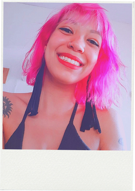

Atualmente atuando como Auxiliar de Marketing.
Empresa: Consórcio Ótimo de Bilhetagem Eletrônica.
Período: Jun. de 2022 – Atualmente
Descrição: Trabalhei durante 6 meses como jovem aprendiz da TAQE para a empresa Atlas Schindler, realizando atividades administrativas. Até que tive a oportunidade de ser efetivada em outra empresa, onde fui indicada pela minha irmã. Iniciando como operadora de telemarketing na empresa Consórcio de Bilhetagem Eletrônica Ótimo, obtive experiência no ramo de atendimento ao cliente. Porém, com um mês de empresa, abriu uma vaga no setor de marketing e fui promovida para o mesmo.
Atualmente atuando como Auxiliar de Backoffice.
Empresa: Consórcio Ótimo de Bilhetagem Eletrônica.
Período: Set. de 2017 – Atualmente
Descrição: Iniciou como Atendente de Vendas na bilheteria, com a função de recarregar os cartões de Pessoa Física. Em 2019, mudou de função para Operadora de Telemarketing Receptivo, com ao atendimento ao cliente nas ligações, no WhatsApp e realizando as tratativas da Ouvidoria do site da empresa. E em 2022, obteve novamente a mudança de função para o cargo atual, com o objetivo de cuidar das rotinas administrativas do setor, realizando a emissão de relatórios , abertura de chamados e dando suporte a equipe.
